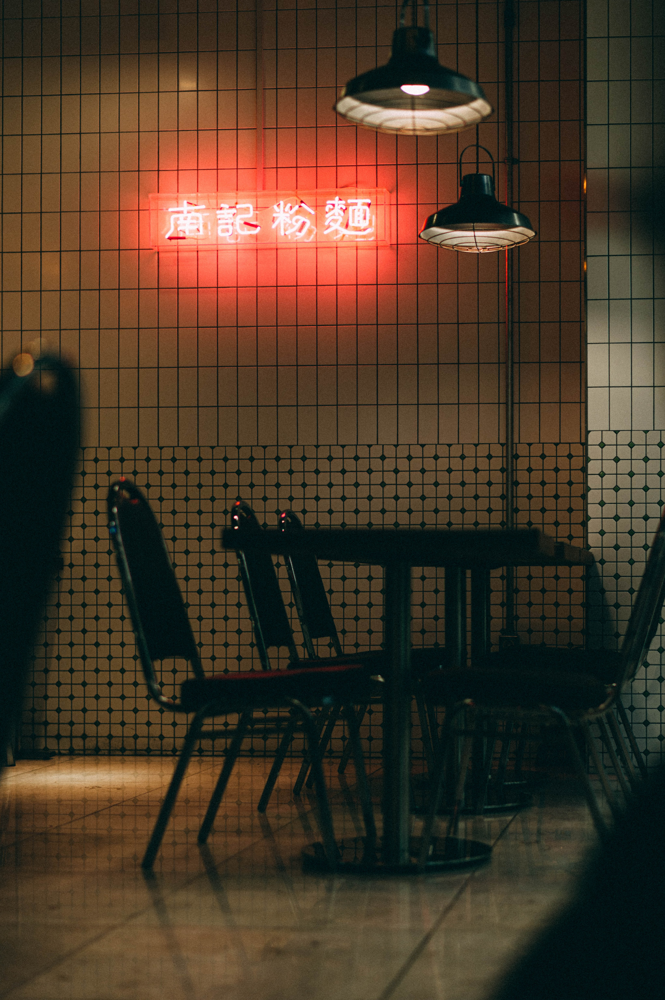

연습
연습용 웹페이지 만들기 기본문법 태그 태그. 열리는태그 닫히는태그(슬래시를붙힌다)2005년 10월, 코트디부아르는 2006 독일 월드컵 아프리카 지역 예선에서 난적 카메룬을 도하의 기적처럼 가까스로 제치고 본선 진출을 확정했다.9차전 안방에서 카메룬한테 2:3으로 깨지는 바람에 자력진출은 불가능한 상황에 놓였는데 코트디부아르에는 설상가상으로 그 다음은 카메룬이 홈이고 카메룬의 상대는 이미 탈락이 확정된 이집트라 아무래도 카메룬이 올라가지 않겠냐고 점쳐졌다. 그리고, 운명의 마지막 10차전에서 코트디부아르는 수단 원정에서 3:0으로 이기고 있는데도 카메룬이 이집트를 1:0으로 이기고 있는 상황이라 코트디부아르의 분위기는 그야말로 암울했는데 카메룬 대 이집트 경기에서 후반 34분 모하메드 샤키가 동점골을 넣으며 코트디부아르에 한 줄기 희망의 빛이 비치기 시작했다.코트디부아르는 후반 44분 하이삼 탐발에게 만회골을 내주었으나 더 이상의 추가실점 없이 3:1 승리로 경기를 끝냈고 카메룬 대 이집트의 경기는 1:1로 종료되기 직전 카메룬이 페널티킥을 얻으며 본선 진출의 주인공이 순식간에 코트디부아르에서 카메룬으로 바뀔 위기가 닥쳤다.이걸 넣으면 카메룬이 본선 나가고 못 넣으면 코트디부아르가 본선에 나가는 상황. 그리고 다들 숨죽이고 지켜보는 가운데 키커로 나선 피에르 워메가 실축[4]하면서 바로 경기가 종료되는 순간 코트디부아르 선수들과 관중들은 일제히 환호했다. 대표팀이 월드컵 본선 진출을 확정할 당시 코트디부아르는 둘로 쪼개져 내전에 시달리고 있었는데, 이때 코트디부아르 방송에서 대표팀 인터뷰를 하던 도중 디디에 드록바가 내전을 그만두자고 연설을 하면서 생중계 카메라 앞에서 다른 선수들과 함께 무릎을 꿇었다. 
"여러분, 단 일주일만이라도 무기를 내려놓고 전쟁을 멈춥시다."
이후 내전의 주체였던 두 집단 간에는 화해의 분위기가 만들어졌고, 2007년 3월 양 집단이 부르키나파소의 수도인 와가두구에서 평화 조약에 서명하면서 코트디부아르의 내전은 종식하였다.[5][6]